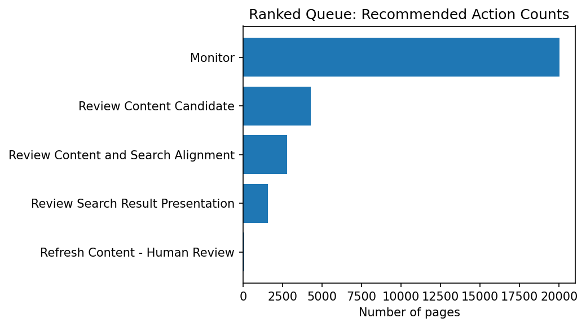
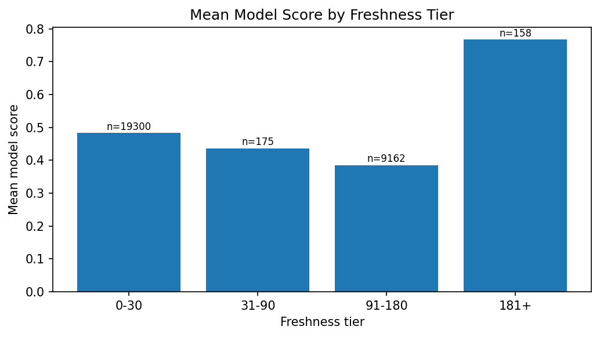

01Introduction
Content that ranks in Google search quietly decays — rankings slip, clicks drop — and most teams notice too late. With thousands of pages and a small editorial team, the real question isn't whether to review content, it's which page first.
This project supports that one decision: a content editor or SEO analyst deciding which pages to check before checking every page manually. After a page is flagged, the team still decides whether to refresh, expand, protect, prune, or simply monitor it — the model only supports that decision, it never makes it.
A wrong call has an asymmetric cost. Flagging a fine page wastes a reviewer's time — annoying, recoverable. Missing a page that actually needs attention means it stays unreviewed indefinitely, since nothing pointed to it. That asymmetry is why recall gets specific attention in the Results section below, not just accuracy.
A single fixed rule can combine a couple of signals at once. Whether a page is actually underperforming depends on several signals together — position, freshness, content type, search intent, competition — which is the kind of multi-factor pattern a trained model can weigh better than a hand-written if-statement, provided it actually beats that rule on the same data. That comparison is the center of this paper.
02Data
This study uses the FlyRank ML Internship anonymized starter release, specifically the
content_refresh_anonymized.csv content-refresh table, covering a single
approximately 90-day performance snapshot rather than a multi-period time series.
client_id and content_id are hashed pseudonyms; no client names,
domains, URLs, or raw search queries appear anywhere in this dataset or in this paper.
What went into the model
Position and position tier, impressions across three windows, days since last update, content age, days with impressions, word/character count, search volume, competition and competition level, CPC, content type, search intent, and which AI provider/model produced the content — plus a missingness flag for every numeric field that has gaps.
What was deliberately left out — and why
ctr, clicks, sessions, pageviews,
engagement_rate, scroll_rate, ai_traffic_pct,
trend_direction, and trend_pct are outcome-adjacent — the model's
target is built directly from CTR, so any of these as a feature would leak the answer into the
model. They're used only as diagnostics, never as inputs. client_id is used purely
to group the validation split, never as a feature; FlyRank's own product decision flags
(health scores, quick-win tags) aren't in this release at all, since they encode a decision
someone already made and would make the comparison circular.
03Methodology
Target
There's no ground-truth "needs refresh" label in this dataset, so the target is a proxy:
ctr_underperforming — true when a page's CTR sits below the median CTR of every
other page in its own position tier. It's built from observed CTR relative to peers at the
same position, not a manually invented threshold.
Baseline
The fair comparison is a position-vs-tier-median rule: flag a page if its average position is worse than the median position for its tier. An earlier, CTR-based staleness rule was deliberately not used as the baseline here — it reads CTR directly, and CTR is what the target is built from, so comparing against it would compare the model to a rule that can already see the answer.
Model and validation
Logistic Regression (class_weight="balanced") inside a preprocessing pipeline —
median-impute and scale numeric features, one-hot encode categorical ones. Validated with
StratifiedGroupKFold, 5 folds, grouped by client_id, so every page
from a given client stays on one side of each fold — the model is never tested on a client it
partly trained on. A time-aware split wasn't possible, since the data is a single snapshot.
Leakage check
Every outcome-adjacent column listed in Data was confirmed absent from the final feature list before training — the same check re-run against the exact features that went into the model.
04Results
Base rate: 45.4% of ranked pages are ctr_underperforming — worth
stating before any accuracy number, since a model needs to clear this before it means much.
| Model | Accuracy | Precision | Recall | F1 | ROC-AUC |
|---|---|---|---|---|---|
| Position baseline (client-grouped) | 0.547 | 0.502 | 0.544 | 0.522 | — |
| Logistic Regression — random row split | 0.752 | 0.736 | 0.709 | 0.722 | 0.834 |
| Logistic Regression — client-grouped split (honest) | 0.737 | 0.774 | 0.593 | 0.672 | 0.804 |
The model beats the baseline on every metric under the honest, client-grouped split. It's also clearly weaker than the same model measured under a plain random split — pages from the same client share patterns, so a random split lets that leak across train and test and inflates every number. The grouped row is the one that should be trusted; the random-split row is shown only to make that gap visible.
Recall (0.593) trailing precision (0.774) means the model is more likely to miss a real underperformer than to wrongly flag a fine page — the more expensive failure mode given the cost asymmetry described in the Introduction.


05Limitations & honest framing
- This is a single ~90-day snapshot, not a time series — there's no way to say from this data whether a flagged page actually improves after review.
- The client-grouped validation covers 31 clients. A client very different from this pool is untested territory.
- Recall trails precision, so some real underperformers are missed — a low model score is not proof a page is fine.
- The target is built from this dataset's own position-tier medians, not an external benchmark — it would move if the underlying data changed.
- The model score comes from
class_weight="balanced"logistic regression, so it's a ranking signal, not a calibrated probability. - The freshness pattern in Figure 2 is an observed association in one snapshot. It does not prove staleness causes underperformance, or that refreshing a page would fix it — it's equally consistent with already-struggling pages simply getting updated less often.
06Ranked recommendations
The model's output feeds a five-band priority queue, using thresholds taken from the actual score distribution (top decile / top quartile of model score, top quartile of 90-day impressions) rather than picked by hand:
| Priority | Recommended action | Reason code | Pages |
|---|---|---|---|
| 1 | Refresh Content — Human Review | RC_HIGH_MODEL_AND_STALE | 83 |
| 2 | Review Content and Search Alignment | RC_HIGH_MODEL_RISK | 2,797 |
| 3 | Review Search Result Presentation | RC_HIGH_VISIBILITY_CTR_GAP | 1,580 |
| 4 | Review Content Candidate | RC_MODEL_REVIEW | 4,301 |
| 5 | Monitor | RC_MONITOR | 20,034 |
Intended use
A review-prioritization tool for a content or SEO team — a ranked list of pages to look at first, with a stated reason for each. Built for a human doing manual review, not automated publishing. It only decides what to look at first; it never decides what to change, and it never edits or publishes anything on its own.
Before acting on a flag
- Confirm the reason actually matches reality — check the page really hasn't been updated, not just that the field looks stale in this export.
- Look at the page's real context — a high score with low impressions can mean the page never had meaningful traffic to begin with.
- Weigh seasonality — a 90-day window can catch a page mid-dip for reasons unrelated to content quality.
What this should never be used for
- Automatic publishing, editing, or removing content — every action ends at human review.
- Automatic title or snippet changes from a CTR-gap flag alone — a low CTR has many possible causes.
- Automatic deprioritizing or pruning — Monitor means no strong signal was found, not that a page is safe to remove.
- Judging a person's or team's performance using
model_score. - Treating a low score as proof a page is fine, given recall in Results is well below 1.0.
07Reproducibility
Every number and chart in this paper comes directly from the capstone notebook, run against the bundled dataset with a fixed random seed.
git clone https://github.com/ArshadNazir1/flyrank-ml-internship-starter.git
cd flyrank-ml-internship-starter
pip install -r requirements.txt
jupyter notebook work/notebooks/capstone.ipynb
# Runtime → Run all — seed = 42 throughoutThe weekly notebooks this capstone builds on:
08Acknowledgments & data credit
Built on the FlyRank ML Internship dataset — flyrank.ai.